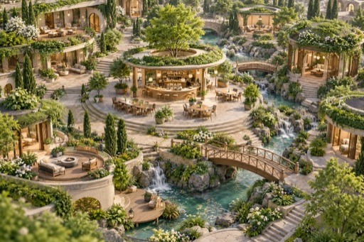
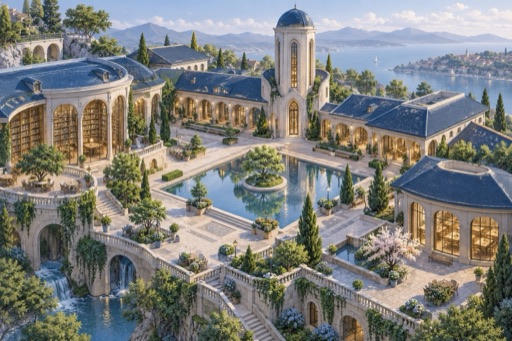
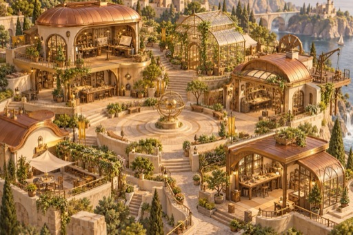
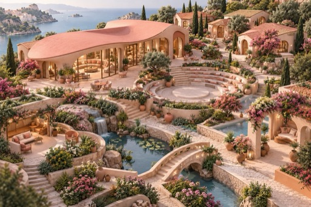
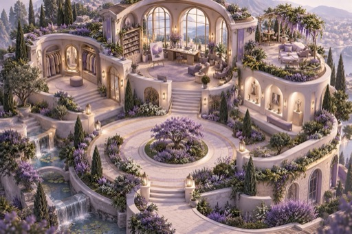

ポータルから入る
共通ヘッダーと活動状況を起点に、5エリアを選ぶ。教材専用の別トップは作らない。
ホームを確認 →PLC会員サイトの教材移植に使う、承認済みポータルのデザイン指示書です。担当者はまず実際の画面に触れ、既存のコンテンツと動線を、この共通デザインに接続してください。

PLCポータルを入口にして、教材は「学ぶ」へ。ページを増やしても、会員が現在地と次の行動を見失わない構成にします。
色と風景は、会員が今どこにいるかを伝える道しるべ。画面の色、ラベル、強調ボタンを同じエリアに揃えます。




端末標準＋ヒラギノを基本に、見出し600・本文400・操作500。大きな余白は顔になる部分へ、学習の続きや支援の入口は近くに置きます。
スマホ2列カードは見出し17px・説明14px・リンク13px。主行動は丸型の塗りボタン、補助行動は文字リンク。内部移動→、外部移動↗。
デモの進捗・ポイントは架空の値です。教材移植時に実会員の値として表示しないでください。
画面とコードを併せて参照してください。別の技術基盤へ移す場合は、全体CSSをそのまま流し込まず、規則を移植先の共通部品へ対応づけます。
このページのURLと指示書の全文を共有してください。承認済みの画面、実装ファイル、移植時の完了条件が一箇所から辿れます。